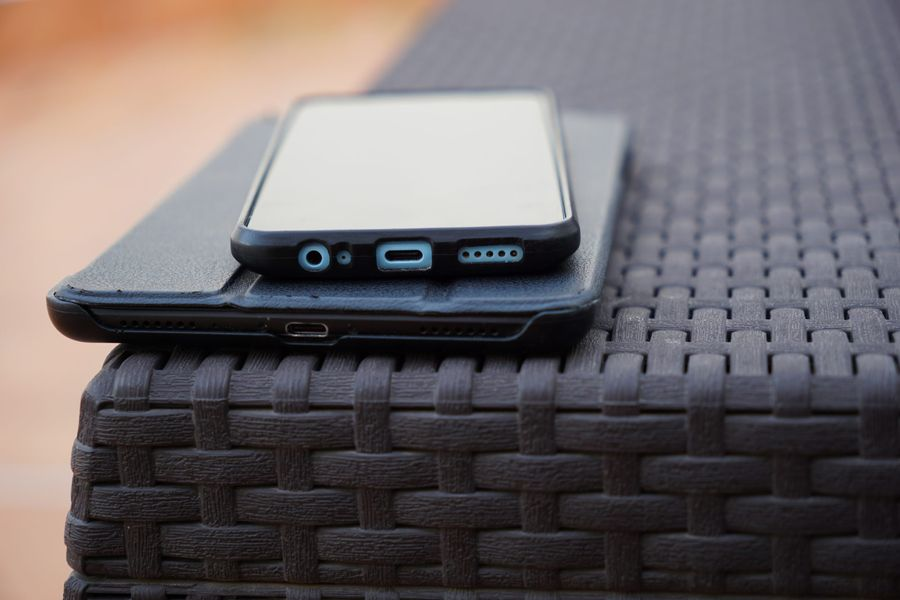

Ana sayfaAksesuarlar
Kılıf, şarj, kulaklık ve şarj noktası
Telefonunuzu koruyan, dolduran ve konuşturan her şey için aksesuar rafı. Stok sık değiştiği için ürün listesi yerine seçim rehberi hazırladık; modelinizi yazın, uygun olanı söyleyelim.
Aksesuar rafı
Telefon aksesuarında en çok aranan ürünler ve her birinde neye bakmanız gerektiği. Hangilerinin o an elimizde olduğunu sorun.
Kılıf
Kamera çıkıntısı ve tuş yerleri modele özeldir; model adını tam söyleyin.
Şeffaf, silikon, darbe emici, kapaklı.
Ekran koruyucu
Ekranın kenar kavisine ve ön kamera boşluğuna uymalı.
Temperli cam, hayalet, mat, esnek film.
Kamera lens koruyucu
Kamera adasının düzenine göre kesilir; modelle birlikte sorun.
Şarj adaptörü
Telefonunuzun desteklediği hızlı şarj standardı ve çıkış gücü (W) önemli.
Şarj kablosu
Uç tipi ve uzunluk; hızlı şarj için kablonun da desteklemesi gerekir.
Kulaklık
Kablolu (3,5 mm ya da USB-C) veya Bluetooth ile kablosuz. Telefonunuzda kulaklık girişi var mı, önce ona bakın.
Powerbank
Kapasite (mAh), çıkış gücü ve ağırlık. Aşağıdaki hesaplayıcı kaç dolum edeceğini gösterir.
Araç tutucu ve araç şarjı
Havalandırma ızgarası, torpido ya da cam tipi; kıskaçlı ya da mıknatıslı.
Raflar sık değişir. Ürün ve stok bilgisini en doğru WhatsApp'tan ya da telefonla alırsınız: 0552 888 88 62
Kılıf seçerken
Her kılıf her şeyi yapamaz. Telefonu nasıl kullandığınıza göre seçin.
- Şeffaf
Telefonun rengini gösterir, incedir; zamanla sararabilir.
- Silikon ve renkli
Elde kaymaz, hafiftir; toz ve tüy tutabilir.
- Darbe emici
Köşeleri kalın, düşmeye karşı daha korunaklı; biraz daha hacimli.
- Kapaklı ve cüzdan tipi
Ekranı da kapatır, kart taşır; tek elle kullanım zorlaşır.
- İnce sert kapak
Telefonu kalınlaştırmaz; çizilmeye karşıdır, darbeye karşı sınırlıdır.
Kablosuz şarj kullanıyorsanız çok kalın ya da metal plakalı kılıflar şarjı zorlaştırabilir. Mıknatıslı araç tutucu için de uygun kılıf gerekir.

Ekran koruyucu türleri
Hangisi size uygun? Türlerin hissi, iyi yanı ve dikkat edilecek noktası.
| Tür | Hissi | İyi yanı | Dikkat |
|---|---|---|---|
| Temperli cam | Kaygan, net, cam gibi | Çizilme ve darbeye karşı iyi korur; kırılırsa ekran yerine o kırılır. | Kavisli ekranlarda kenarlar tam oturmayabilir. |
| Hayalet (gizlilik) | Biraz koyu | Yandan bakanlar ekranı göremez. | Parlaklık azalır, açıdan bakınca kararır. |
| Mat | Pürüzsüz, parlamayan | Parmak izi ve yansımayı azaltır. | Görüntü biraz yumuşar. |
| Esnek film | İnce, esnek | Kavisli ekranlara uyar. | Darbe koruması cama göre zayıftır. |
| Kamera lens koruyucu | Lense yapışık ince cam | Lens camını çizikten korur. | Kalitesizse çekimde parlama yapabilir. |
Temiz yüzey
Takmadan önce ekranı silin, tozu yapışkan bantla alın; tek bir toz zerresi kabarcık yapar.
Ortadan kenara
Hava kabarcıklarını ortadan kenarlara doğru bastırarak çıkarın.
Kırılanı bekletmeyin
Çatlayan koruyucu parmağı kesebilir ve ekranı korumaz; değiştirin.
Ucunuzu tanıyın
Şarj aleti ve kablo alırken ilk soru: telefonunuzun girişi hangisi? Ucu seçin; nasıl tanıyacağınızı ve neye dikkat edeceğinizi görün.
Mesaj önizlemesi
Merhaba Ayasofya Teknoloji, Telefonumda USB-C giriş var. Bu girişe uygun kablo ve şarj aleti sormak istiyorum.
USB-C
Oval ve simetriktir, iki yönde de takılır. Yeni telefonların çoğunda bu giriş bulunur. Hızlı şarj için adaptör ve kablonun da telefonunuzun desteklediği standarda (ör. USB Power Delivery) uygun olması gerekir. Veri ve görüntü aktarımı kabloya göre değişir.
Lightning
İnce, yassı bir dildir; iki yüzü aynıdır ve metal temas noktaları dıştadır. Bazı eski telefon modellerinde bulunur. Uyumsuz ya da kalitesiz kablolarda “aksesuar desteklenmiyor” uyarısı çıkabilir.
Micro-USB
Yamuk (trapez) biçimlidir ve tek yönde takılır. Eski telefonlarda, bazı kulaklık, hoparlör ve powerbank'lerde bulunur. Ters takmak için zorlamayın; soket zarar görebilir.
USB-A
Kablonun adaptöre ya da araç şarjına takılan büyük, dikdörtgen ucudur. Yeni hızlı şarj adaptörlerinin çoğunda USB-C çıkış bulunur; kablonun iki ucunu birlikte düşünün.
3,5 mm kulaklık girişi
Yuvarlak, klasik kulaklık girişidir. Telefonunuzda bu giriş yoksa kablolu kulaklık için USB-C kulaklık ya da dönüştürücü gerekir; kablosuz kulaklık da bir seçenektir.
Hızlı şarj nasıl çalışır?
Adaptör seçerken kafa karıştıran üç konu, sade bir dille.
Watt ne demek?
Şarj gücü watt (W) ile ölçülür: volt × amper. Telefon destekliyorsa daha yüksek watt daha hızlı dolum demektir.
Standart uyumu
Hızlı şarj için telefon, adaptör ve kablo aynı standardı desteklemeli. Biri desteklemiyorsa telefon normal hızda dolar.
Yüksek watt zarar verir mi?
Uyumlu bir adaptör telefonun istediğinden fazlasını vermez; telefon ihtiyacı kadar çeker. Kalitesiz ve sahte adaptörler ise ısınma ve arıza riski taşır.
Son kısmın yavaş dolması normaldir. Batarya korunsun diye doluluk arttıkça şarj akımı düşürülür; ilk yarı hızlı, son kısım daha yavaş dolar.
Powerbank kaç dolum eder?
Etikette yazan kapasitenin tamamı telefona ulaşmaz. Telefonunuzun batarya kapasitesini ve powerbank'i seçin, yaklaşık dolum sayısını görün.
- Neden eksik?
Powerbank kapasitesi iç hücrelerin geriliminde (3,7 V) yazılır; telefona aktarılırken gerilim dönüşümü ve ısı yüzünden bir kısmı kaybolur. Etiketteki kapasitenin yaklaşık üçte ikisi telefona ulaşır.
- Wh hesabı
Wh = mAh × 3,7 ÷ 1000. Uçak kuralları Wh üzerinden yazılır.
- Uçakta
Powerbank bavula konmaz, kabin bagajında taşınır. 100 Wh altı genelde serbesttir; 100–160 Wh arası havayolu onayı ister, üstü taşınamaz. Yolculuktan önce havayolunuzun kuralına bakın.
Dolum hesaplayıcı
37 Wh · kabin bagajında taşınabilecek sınıfta.
Merhaba Ayasofya Teknoloji, 10.000 mAh powerbank sormak istiyorum.
Şarj noktası
Google'da cep telefonu şarj istasyonu olarak da kayıtlıyız. Yolda telefonunuz kapandıysa uğrayın; şarj noktasını ve kullanım koşullarını dükkânda sorun. Her gün gece 00:00'a kadar açığız.
Şarj güvenliği
- Yumuşak zeminde şarj etmeyin
Yastık, yorgan ve koltuk ısıyı hapseder.
- Sıcakta şarj etmeyin
Güneş altındaki araçta ya da çok sıcak ortamda batarya yıpranır.
- Islak sokete takmayın
Sıvı temasından sonra soket tamamen kuruyana kadar bekleyin.
- Hasarlı kabloyu kullanmayın
Ucu kararmış ya da kılıfı yırtılmış kablo kısa devre riski taşır.
- Şişen bataryayı şarj etmeyin
Kabaran arka kapak ya da kalkan ekran şişme belirtisidir; telefonu kapatıp getirin.